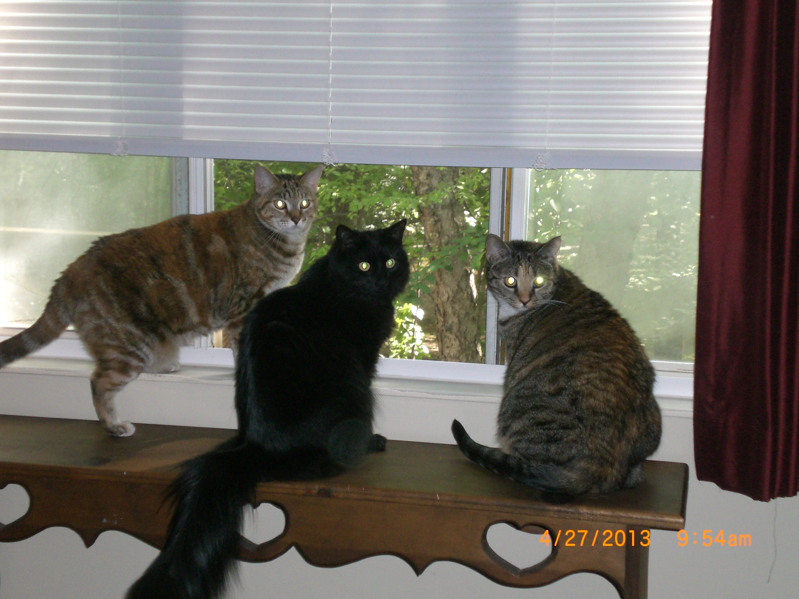

About Me

Hi there - I'm Kari! I moved to Raleigh 3 years ago with my wonderful husband, Isaiah and our three overly-spoiled feline dependents : Scarlett, Shadow, and Slashdot.
I have embarked on many 'firsts' since moving to North Carolina. We bought a house which needed some TLC, so I learned more than I have ever cared to know about: replacing a bathtub, changing out tan electrical outlets for clean white ones, installing overhead lighting, removing multiple layers of obscenely tacky wallpaper, as well as painting every square inch of the house.
We also welcomed children into our home by becoming Wake County Foster Parents. The program is designed to help kids who are neglected, abused, and/or in an unsafe home environment. We provide a stable, loving, structured home where we help support and encourage the child's biological family. Being a foster parent is the most difficult yet rewarding thing I have ever been a part of.
| Go Back Further in History | | My Hobbies | | Back to Home Page |